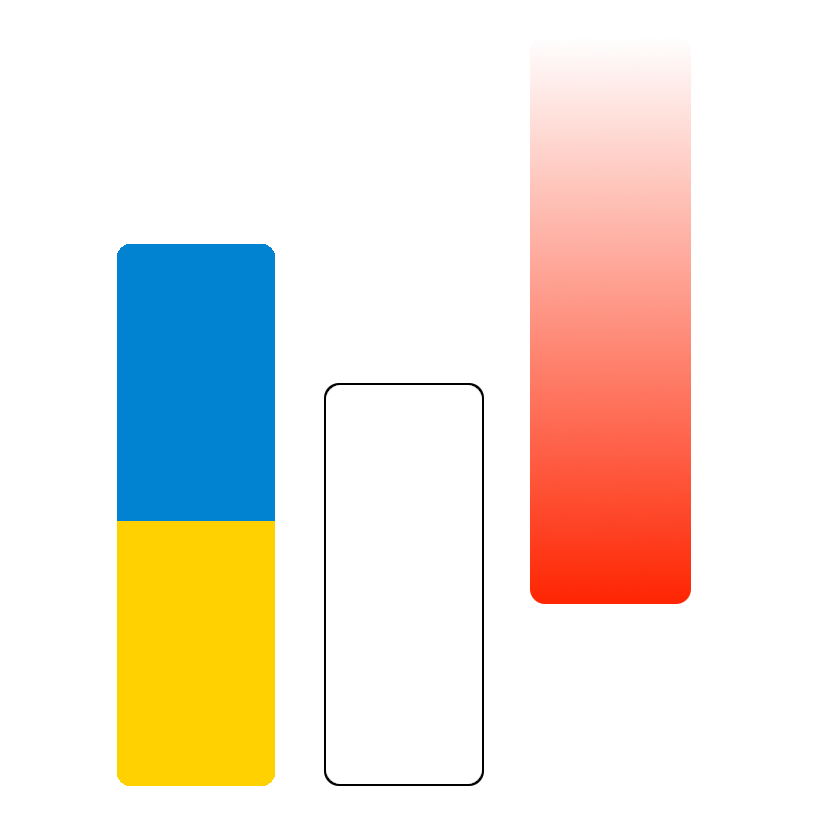

Welcome to covid19.usegalaxy.fr
Covid19 - Workflows maintained by IWC
| Workflow name | Purpose | Links |
|---|---|---|
| COVID-19: variation analysis on ARTIC PE data 0.4.1 | Annotation: The workflow for Illumina-sequenced ARTIC data builds on the RNASeq workflow for paired-end data using the same steps for mapping and variant calling, but adds extra logic for trimming ARTIC primer sequences off reads with the ivar package. In addition, this workflow uses ivar also to identify amplicons affected by ARTIC primer-binding site mutations and excludes reads derived from such tainted amplicons when calculating allele-frequencies of other variants. |
|
| COVID-19: SARS-CoV-2 Illumina Amplicon pipeline - iVar based 0.1 | Annotation: Find and annotate variants in SARS-CoV-2 samples sequenced with Illumina ARTICv3 |
|
| COVID-19: variation analysis on WGS PE data 0.2.1 | Annotation: This workflows performs paired end read mapping with bwa-mem followed by sensitive variant calling across a wide range of AFs with lofreq |
|
| COVID-19: variation analysis on WGS SE data 0.1.2 | Annotation: This workflows performs single end read mapping with bowtie2 followed by sensitive variant calling across a wide range of AFs with lofreq |
|
| COVID-19: variation analysis of ARTIC ONT data 0.3 | Annotation: This workflow for ONT-sequenced ARTIC data is modeled after the alignment/variant-calling steps of the ARTIC pipeline. It performs, essentially, the same steps as that pipeline’s minion command, i.e. read mapping with minimap2 and variant calling with medaka. Like the Illumina ARTIC workflow it uses ivar for primer trimming. Since ONT-sequenced reads have a much higher error rate than Illumina-sequenced reads and are therefor plagued more by false-positive variant calls, this workflow does make no attempt to handle amplicons affected by potential primer-binding site mutations. |
|
| COVID-19: consensus construction 0.2.1 | Annotation: Build a consensus sequence from FILTER PASS variants with intrasample allele-frequency above a configurable consensus threshold. Hard-mask regions with low coverage (but not consensus variants within them) and ambiguous sites. |
|
| COVID-19: variation analysis reporting 0.1.1 | Annotation: This workflow takes table of variants produced by any of the other four variant calling workflows in IWC and generates a list of variants by Samples and by Variant. |
|